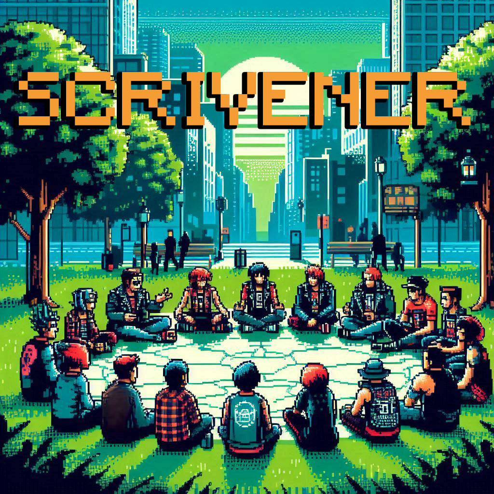

Scrivener
Click here for more detailed instructions on how to play.
Scrivener is a text-based game that takes place on Discord, drawing inspiration from Dungeons &
Dragons (DnD), Decentralized Autonomous Organizations (DAOs), and utilizing an AI-assisted storyteller to
create
an expansive future-building game. The game is set in a near-future world where illiberalism has gained a
strong
foothold, and the last bastions of the left have united to form a DAO to challenge the new world order.
Players
from various leftist factions must collaborate to propose and build a new world, responding to crises and
engaging in prefigurative actions. Players can also propose to change the rules of the game as it
progresses.
The primary goal of Scrivener is to create an engaging and immersive game that encourages participatory
governance, collaboration, and future-building. By drawing inspiration from various sources and utilizing an
AI
storyteller, the game aims to provide a unique and dynamic experience that fosters critical thinking and
creative problem-solving.
Getting Started
- Join the Scrivener Discord server and navigate to the
#scrivener-rulebook channel to read the game overview and instructions.
- When you join the channel you should be prompted to choose a faction. If you miss that message, simply
type
!join to begin. Factions are as follows: Forever Marxists, Progressive Deep State, Anarcho-Syndicalists,
Beyond-Us Monadists, or Postcapitalist Eschatologists.
- Each player starts with the same number of credits, which can be used to propose and vote on projects
within
the game. Successful proposals will earn the proposing player more credits for future proposals and
projects. Certain projects may also require that players chip in.
- Twice per week, players will be presented with dispatches, which can be crises or opportunities, to
which
they must respond.
- Players can propose actions in response to dispatches by spending a portion of their currency. Other
players
can then vote on these proposals, with the winning proposal being implemented in the game, therefore
altering the course of the speculative narrative.
Gameplay
- Collaborate with other players to respond to dispatches and build a new world.
- Use your unique perspective to propose actions and solutions. Factions will provide advice throughout
the
game through the use of an AI-assisted storyteller.
- Spend your credits wisely to propose and vote on projects that dethrone the powers that be and create
space
for a new imaginary and material reality.
- Be prepared for unexpected crises and opportunities that may arise.
- Chat with other players! This is a game about collective decision making and co-authorship.
Tips
- Stay up to date with new dispatches and game updates by checking the #scrivener-rulebook channel
regularly.
- Use the AI storyteller to make inquiries and gather information about the game world.
- Collaborate with players from other factions to build a diverse and resilient movement.
- Be creative and open-minded when proposing solutions and responding to dispatches.
- Use your credits strategically to maximize your impact in the game.
FAQs
- Q: How do I join a faction?
- A: Navigate to the #scrivener-rulebook channel to read more about each faction. Type
!join
in the #scrivener channel when you’re ready.
- Q: How do I propose an action in response to a dispatch?
- A: Type !propose during the Proposals period. It costs 10 credits to propose an action
and you may only propose one.
- Q: How do I vote on a proposal?
- A: Type !vote to cast your vote. It costs 1 credit to vote. If you vote on the winning
proposal this is returned to you.
- Q: How do I check my balance of credits etc?
- A: Use the command !info to check your status.
- Q: How do I get more credits?
- A: Credits are awarded based on participation and successful proposals and in-game
events.
- Q: How long does the game last?